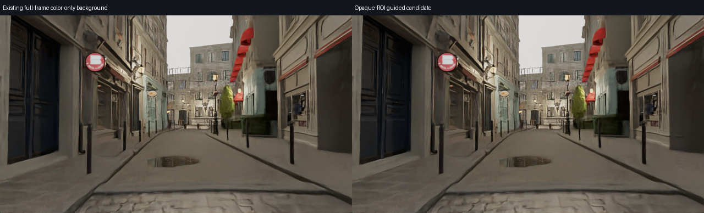
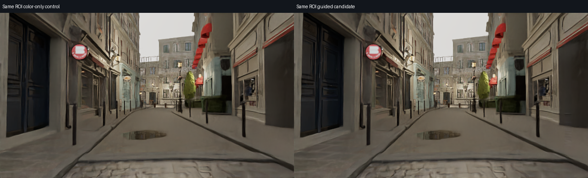
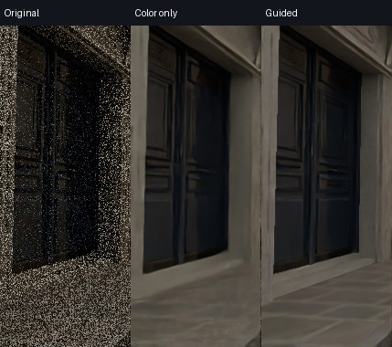
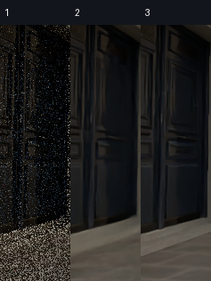
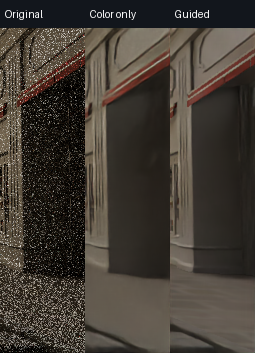
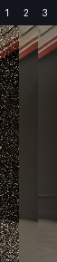

仅对实际辅助通道完整可靠的矩形输入 albedo/normal。玻璃、水、边界及其余区域保留原 color-only 结果；雨信号按实际覆盖率重组。尚待实图判断。
各区域三列依次为：1 原始 HDR；2 同裁切仅颜色去噪；3 同裁切加入真实 albedo 与 normal。

以下两列使用相同 ROI、上下文和边缘重组，帮助区分裁切影响与引导影响。


内框原尺寸：


内框原尺寸：

不据此宣称透明路径、连续动态、1080p或整幅图画质通过。OIDN 官方辅助通道说明